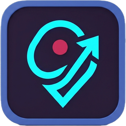

SpotMoFor organizers, artists, venues & collectives
SpotMo is the map-based discovery platform built for the independent event scene — the gigs, exhibits, markets and gatherings mainstream platforms never show.
Swipe or tap right to begin →
01 — What is SpotMo
Open it, and see gigs, exhibits, markets and gatherings plotted on a map in real time, the moment they're posted.
"Built for local communities — not for major entertainment companies."
02 — The Problem
A 40-person gig deserves to be found as easily as one with 4,000.
Often left with only social media and whoever shares their post.
Venues host amazing events only their regulars ever hear about.
Ticketed, sponsored, or high-profile listings get priority.
03 — Our Mission
Every one of them deserves an audience.
04 — Why SpotMo
05 — Benefits · Organizer
06 — Benefits · Venue
07 — Benefits · Production
08 — How to Add an Event
As organizer or venue.
One clear entry point.
Title, time, price, description.
Drop it on the map.
Your poster or flyer art.
Send it live.
It's on the map — now.
09 — Example Events
10 — Future Vision
Shaped by what organizers ask for first.
SpotMo
We're not here to compete with platforms serving major concerts and commercial productions — we're here to fill the gap they leave.